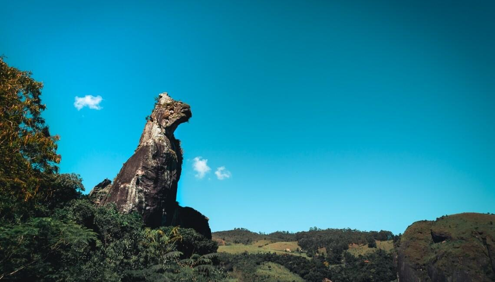
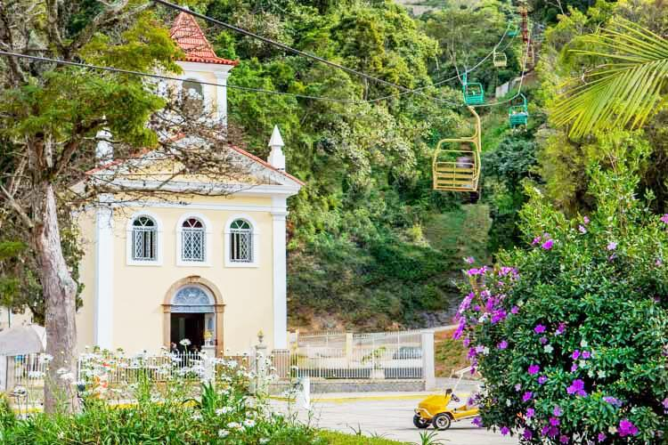
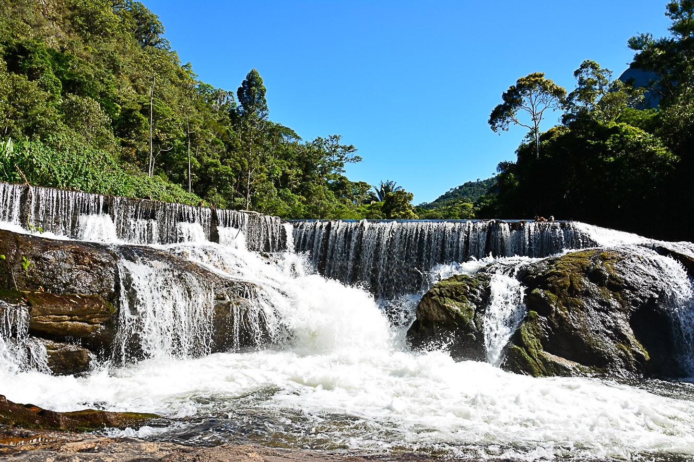

Descubra Nova Friburgo
Cercada pela Mata Atlântica e pelas montanhas da Serra Verde Imperial, Nova Friburgo combina paisagens naturais, história e cultura. Entre seus atrativos estão o Cão Sentado, o Teleférico da Praça do Suspiro, Lumiar e São Pedro da Serra.

Cão Sentado
Um dos símbolos naturais mais conhecidos de Nova Friburgo. A formação rochosa pode ser visitada por meio de uma trilha que passa por outras formações geológicas e leva até um mirante.

Teleférico
Localizado em uma das áreas mais tradicionais da cidade, o teleférico proporciona uma vista panorâmica de Nova Friburgo e das montanhas ao redor.

Lumiar e São Pedro
Os distritos são conhecidos pelo contato com a natureza, rios, cachoeiras, montanhas, restaurantes e clima tranquilo, sendo opções populares para quem procura ecoturismo e descanso.